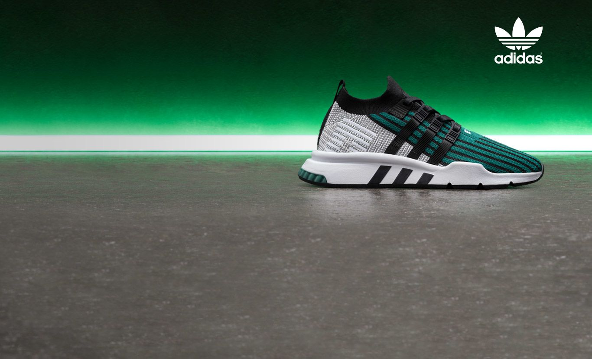

Sports Brand

Association football
Autographed jersey of the Spain national football team that was manufactured by Adidas for the 2014 FIFA World Cup
One of the main focuses of Adidas has always been football kits, and the associated equipment. Adidas remains a major company in the global supply of team kits for international association football teams and clubs.
Adidas makes referee kits that are used in international competition and by many countries and leagues in the world.
The company has been an innovator in the area of footwear for the sport, with notable examples including the 1979 release of the Copa Mundial moulded boot used for matches on firm dry pitches. It holds the accolade of the best selling boot of all time.
The soft-ground equivalent was named World Cup and it too remains on the market.
Baseball
Adidas has also provided baseball equipment and sponsors numerous players of Major League Baseball and Nippon Professional Baseball in Japan.
Adidas Baseball hardgoods are licensed to Dick's Sporting Goods.
From 1997 to 2008, Adidas sponsored New York Yankees.
Basketball
Adidas' Superstar and Pro Model shoes, affectionately known as "shelltoes" for their stylized hard rubber toe box, were fueled by, among others, coaches such as UCLA's John Wooden.
Adidas drew about even with Converse in basketball by the mid 1970s before both started to fall behind then-upstart Nike in the early 1980s.
Subsequently, Adidas Superstar became very popular in the 1980s hip hop streetwear scene alongside Adidas's stripe-sided polyester suits.[citation needed]
From 2006 to 2017, Adidas was the outfitter of all 30 franchises in the National Basketball Association, replacing the Reebok brand after Adidas' acquisition of Reebok.
Adidas was replaced by Nike as the official outfitter of the league after the 2016–17 season.